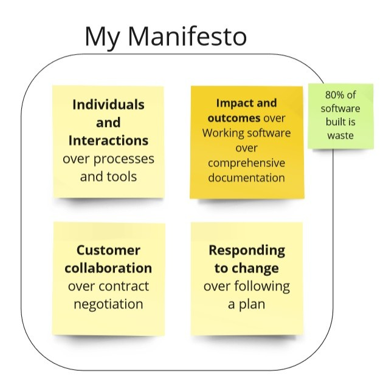
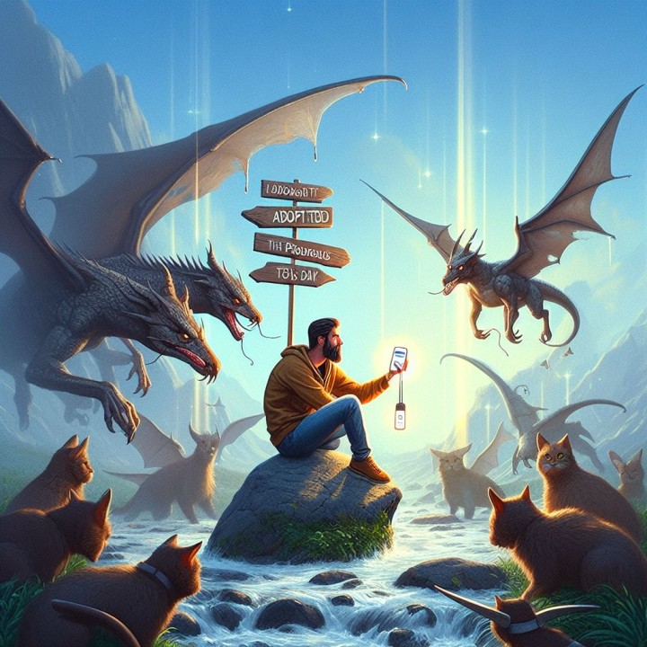

Software Efectivo y Sencillo
Inicio
Artículos
Artículos más destacados
Developer Experience
Getting started with Java Stream API

My Agile Manifesto v1.1

Test-Driven Development (TDD) for Effective Planning
Menos es Más. Aumentar la productividad del sistema reduciendo
The Power of Prioritization: Mitigating the Highest Risk in Software Development